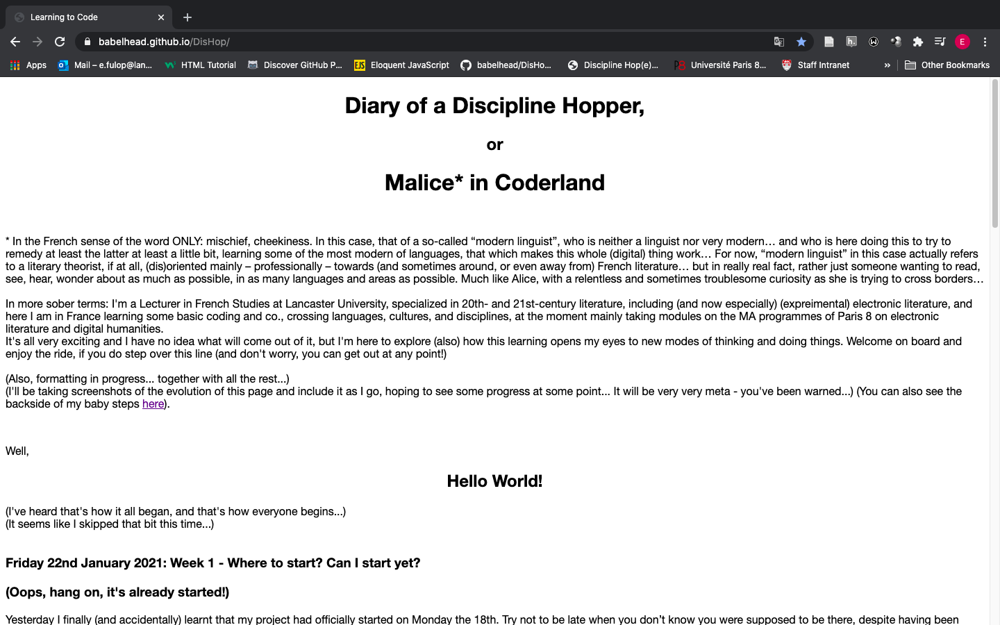
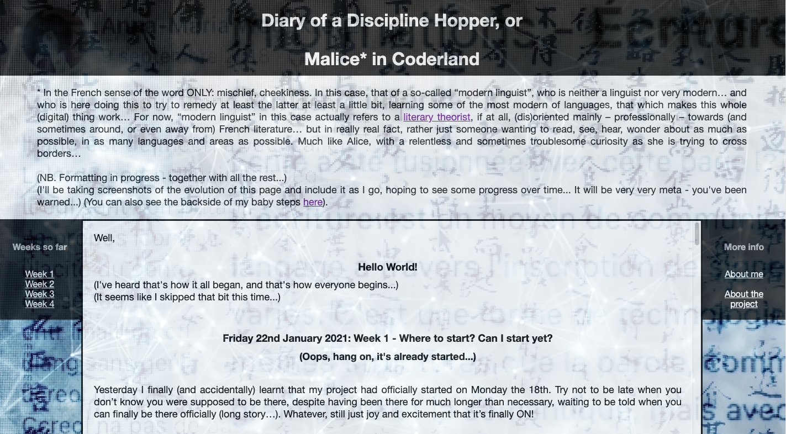
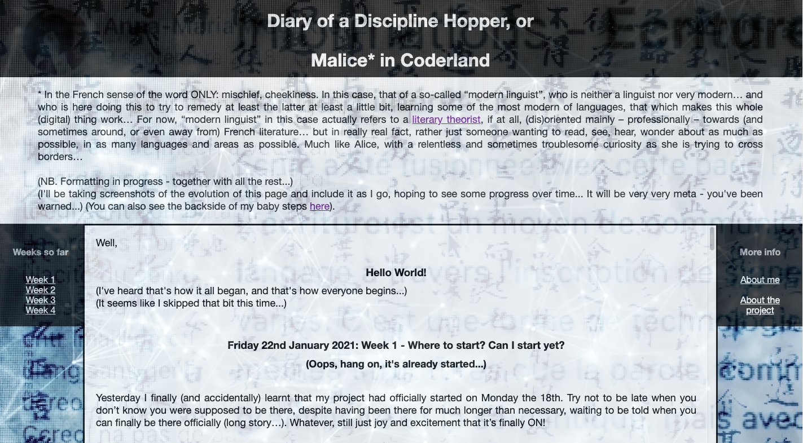
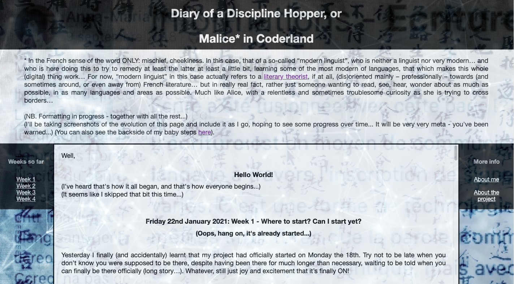

* In French: mischief, cheekiness. In this case, that of a so-called “modern linguist”, who is neither a linguist (but who cannot help mixing languages...) nor very modern… and who is here doing this to try to remedy at least the latter at least a little bit, learning some of the most modern of languages, that which makes this whole (digital) thing work… For now, “modern linguist” in this case actually refers to a literary theorist, if at all, (dis)oriented mainly – professionally – towards (and sometimes around, or even away from) French literature… but most importantly, simply someone keen to read, see, hear, wonder about everything, in as many languages and areas as possible. Much like Alice, with a relentless and sometimes troublesome curiosity as she is trying to cross borders…
You can find a short conversation about this project here.
(NB. The formatting and structuring of this website is in progress - together with all the rest... I'll be taking screenshots of the evolution of this page and include it as I go, hoping to see some progress over time... (It will be very very meta - you've been warned...)
You can also see the backside of my baby steps here).
(I've heard that's how it all began, and that's how everyone begins...)
(It seems like I skipped that bit this time...)
Friday 22 January 2021: Week 1 - Where to start? Can I start yet?
(Oops, hang on, it's already started...)
Yesterday I finally (and accidentally) learnt that my project had officially started on Monday the 18th. Try not to be late when you don’t know you were supposed to be there, despite having been there for much longer than necessary, waiting to be told when you can finally be there officially (long story…). Whatever, still just joy and excitement that it’s finally ON!
A lot of things happened already as last week I (still unofficially, and therefore somewhat patchily…) attended an intensive week on HTML/CSS integration, after an even less well managed presence in a somewhat less intensive project work week on generative fiction, which was the conclusion of the course I unofficially (and therefore patchily…) followed since October. In the latter, we had a couple of hours of intro to JavaScript and a couple of hours on the content management system Omeka S, of which I didn’t get much. This week, it was, for a change, an intensive seminar on Stiegler and technique by the PHITECO minor at UTC.
The HTML/CSS seems easy enough for starters. Just a tool, and it works, after just a couple of hours I can get some basic stuff working, which keeps amazing me. OK, I haven’t quite get the nuts and bolts of how to place it on a server yet, but I can write some mini HTML and CSS stuff that my navigator can execute, and I begin to understand how HTML and CSS and JavaScript and PHP work together, recognize some pointers in the code (markup).
I made this, and I’m dead proud of it! It’s like realising you can just crack an egg in a pan and it’s actual food you can have for lunch, but you never thought that’s how it’s actually done and you could as well do it… Even if it was straight after the tutor’s demonstration, using the elements we just learnt, and constantly referring to the tutor’s explanations and examples and online reference materials… It’s how you learn a language, isn’t it? you repeat it after the teacher and wonder that people speaking it actually understand you.
The Stiegler seminar was great too, the bits I could catch (still too many distracting practicalities to deal with this week, flat hunt, Lancaster business, etc…). Some ideas about writing as hypomnemata, écriture de soi as technique de soi (from Foucault), entropy as “effacement du passé”, etc. – ideas to come back to… But most interesting of all – and things I won’t find in a book or website – were the discussions with the students, in particular in UX design, and their perspective on their degree and profession/specialism – still too exclusively associated with IT, even though UX design could/should take “experience” in a much broader sense (apparently in the London School of Arts, where the boyfriend of one of the student studies it, there is a much broader and abstract/artistic approach to it –, its content and value, especially in France, where there isn’t any other school yet offering a dedicated degree in it, but where therefore the profession also seems to struggle its place/identity and affirm its interest as a not purely technical skill, and the possibility of shaping a French-style approach to UX design, like there is French-style “ingénieurs”, and TC as an institution’s approach to it (technically oriented or disoriented…). I hope to continue this conversation with them and others in the workshop I’ll be doing with them this term!
Today I went to get a book I ordered at Fnac, HTML, XHTML & CSS pour les nuls. It’s of course the translation of a US edition. I spent a good half an hour browsing through the Fnac St Lazare’s small section on Computing. Hungry for books. I bought a big one on Architecture et technologie des ordinateurs, which is a French original for university students, and which seemed comprehensive enough to give me some degree of satisfaction (although I’ll hardly ever get through it, it seems a good reference book – with a lot of English terminology in brackets – it’ll also help linking up the languages around the topic, learning what corresponds to what, as it’s not always entirely straightforward). I somehow feel, experience the content and the whole subject differently in French and in English. I clearly feel it more natural and somehow easier in English, as if French had to try too hard to squeeze it into itself, or wrap itself around it… It has created much of the terminology already, for other bits it simply imported the English, but French still doesn’t feel to me like the natural environment of this subject. I don’t know if it’s my cultural bias or a real thing – French programmers can certainly become perfectly proficient without speaking or understanding much English, they would just know the terminology like you learn the Latin terms when studying medicine, I guess. I wonder if the presentation of things, the discourse is indeed somehow different like I feel it is, or it’s just the language and hearing it from the French, with their different culture and background, that gives it a different flavour (is that different at all? Perhaps the impossible to identify discursive differences, but how to show the difference in flavour – or the lack of it? obviously it’s a different flavour, since the language sounds and feels so different… to me… who could better compare?)
NB I will have to make sure to take-notes-as-I-go, because otherwise it’ll be impossible to gather all the observations that pass through my mind…
Thursday 28 January
The idea of the day: Rather than just buying a blog space on a wysiwyg provider, create a GitHub repository and publish my own webpages and projects there, as GitHub Pages, with the source accessible, with references to the files that will include commentaries – writing at several levels at the same time, showing the thinking and evolution/questions/difficulties.
Create a blog-style thing in html use the list function, each entry/date would be an item on the list, each can be identified with a link (a new html page each time, or in one file with some go-to function inside it, identifying the list elements? I still have to figure out how to create a blog structure, but I don’t want to fall back on an easy template, the idea is to do my own bricolage, whatever it takes and whatever amateur the result will be.
Commentary option through contact form – or other preset option?
So here we are on GitHub, and you are seeing this as a GitHub Page (I told you we'd get mega meta...). This week’s intensive course on “Systèmes d’information et programmation internet” was a great, if dense and inevitably very cursory, intro by Samuel Szonieczky to using forms, databases, and CMS (content management systems), and how they can work together. He emphasized the plasticity of all things digital, and the fact that there are virtually infinite possibilities to transform and transfer things from one place/tool/system into others. The web is an ecosystem and you “only” need to find the way to translate/import/export data from one place and use to another. Also, for the know-how, he pointed out: “Je ne connais pas la syntaxe par coeur, mais je sais ce que je veux faire et quels sont les mots clé pour trouver, ce qui me permet d’avancer vite.” He also showed in the process how the browsers’ development tools (source code and console) are key to the process of coding – it’s much about decoding what doesn’t work when it doesn’t (which is a normal part of the process…). In a way, writing is at least as much about deciphering and rewriting/amending as it is about committing new elements to the code in progress. (By the way, the whole terminology would be worth some analysis – on GitHub, you edit then “commit” changes, “push” and “pull” files and repositories, etc… I’ll come back to some of these at some point!)
Thursday 3 February
As you can see, I've started working on the formatting, playing around with some of the CSS tricks we went through two weeks ago, and refining the structure of the site and the page... I mean, creating a structure, since there wasn't really one before... OK, it's not exactly a visual or structural masterpiece, but... It turns out that a main problem might be that it's difficult to stop. As in, it's 00:19 right now (erm... 00:31...), and two hours ago I meant to go to bed with a book, but then I went on doing just this little bit than that...
Anyway, see the difference? There is also a menu that actually works and all :) (OK, still just fast food, but still...)

(OK, 00:43, now I'm really off now... to be continued...)
Monday 15 February
Looking back, turns out it was quite a week…
For the class on “Document numérique et design de l’information”, reading on “autogestion” (self-management) and free/open source software and GNU, texts to be annotated with a tool in development as part of the ANR project Archival - Valorisation d'archives multimedia, to which the class contributes by annotating some of these materials (“Le projet ARCHIVAL travaillera sur la compréhension automatique multimodale du langage pour développer de nouvelles interfaces intelligentes de médiation et de transmission des savoirs.” – in addition to texts, the objective is to develop machine reading methods for video and other media and better navigation/exploitation of archival materials. The project leader, Prof. Ghislaine Azémard, Chair UNESCO ITEN (Innovation, Transmission, Édition Numériques, FMSH / Université Paris 8), is on the teaching team, led by Khaldoum Zreik, which is great). We were introduced to the annotation software (still a bit clunky and awkward, with a bugging cursor they need to sort out) and reflected on some passages together.
The readings (Castoriadis, “Autogestion et hiérarchie” (1979), from the Encyclopédie internationale de l’autogestion; Olivier Blondeau, "Genèse et subversion du capitalisme informationnel. LINUX et les logiciels libres: vers une nouvelle utopie concrète?" in Libres enfants du savoir numérique, dir. O. Blondeau, Editions de l’Eclat (2000), and Richard Stallman’s “GNU Manifesto” (1984) in the same (in Fr. translation)) were really interesting in highlighting the links between organizational structures in society, economy, technology and their interdependence – ie. you cannot create a truly horizontal structure inside a hierarchical framework, according to Castoriadis; self-management requires the abolition of all hierarchical (power) structures and (economic) inequality. A radical leftist thought from the 70s, which resonates well with Stallman’s free software movement, which is in a way the continuation of Castoriadis’s thought in/for the digital environment: proprietary software entails unequal economic and power relations and enables dependency and exploitation. Blondeau explains the Linux vs. MS as a mode of resistance against Fordist economy, and highlights the insufficiency of a Marxist approach to (material) production and property in the (supposedly) immaterial digital economy and (direct) intellectual value production (this might need some update today, better taking into account the massive material infrastructures required by the supposedly immaterial digital production and information). He also points out that the concept of intellectual property, created to protect the interests of humanity, for the work to be able to survive its creator, is now turning into its opposite and becoming an obstacle in the digital economy. Blondeau also makes reference to Eric S. Raymond’s metaphor of the “cathedral vs bazaar” to describe the hierarchical organisation vs Linux-style free and open source project (this also made me think of the Ihab Hassan-style opposition between modern vs postmodern: Proust-like cathedral idea (eve if there is an actual bazaar inside his circular cathedral…) vs fragment-like / networked construction à la Cortázar, for instance, or Bolaño’s 2666, the loss of belief in the possibility of a Whole as a finished Thing…). The bazaar, despite its chaotic appearance, seems (proves…) to be a more stable structure than the cathedral – just like the network that doesn’t rely on a central piece (a keystone or clef de voûte) – because an issue at any point can be balanced out by alternative options/routes – or in the case of free software, the fact of multiple users being able to pick up and correct bugs rather than having to wait for the provider’s reaction and solution, results in a quicker and more flexible solutions. Things can of course go wrong, but they do with a centralized mode of organization as well – and often with farther reaching impact, if the system resists quick and easy reaction (NB the free software in itself surely still won’t lack hierarchical structures, and even the organization of at least some of the work would be overlooked by someone, at least in the design/conception phase – but perhaps here some hierarchy appears inside the horizontal framework, rather than the other way round?)
In any case, all this has taken me back (and forward again) somewhat unexpectedly to two key concepts I’ve been playing with which keep coming back, two projects I drafted at some point in different contexts and forms but which never materialized as such: one on hierarchies – this came from my musings on narrative paradoxes, in particular the aporetic mise en abyme, which collapses the hierarchy of diegetic levels (and narrative worlds), as well as the question of whether a networked society without hierarchy is conceivable at all, or how horizontal network and hierarchy can be complementary – and the other one on complexity and complex systems, where feedback loops replace hierarchical communication and command channels. All ends seem to meet again now – and the political, economic, social, and ecological importance of resisting dependency (both from companies and products, but also from structures held by a single power) through just accepting the black boxes we are offered. In any case, all this seems to confirm again the importance of learning to understand a bit better what it is we don’t have access to, and some of the potentials of code to (consciously or unconsciously) manipulate users and spread ideologies. This is just a first step, of course, but an indispensable one – like learning a language in a foreign country is indispensable for creating an autonomous life in it… In parallel, I’ve been reading Gao Xingjian’s Le Livre d’un homme seul, his memoire of sorts of living, surviving, and running away from communist China from the late 60s, with many direct and indirect references to oppression and the impossibility of not taking a position in certain moments – any action or non-action, enunciation or silence would be interpreted as a position of one kind or another anyway, without that one can always know on what basis a word or action is interpreted as a criticism or danger etc… and I watched a couple of documentaries about Mao and China, and how he managed to keep his power facing the many millions of people he made suffer (not alone, but with people who could never feel entirely safe again…), how fear and violence was used to make a large enough insurrection impossible, how lack of information could make believe in his ideologies, etc… and how dangerous it is to close our eyes and just accept… (not that we didn’t know… the banality of the evil, here too… but we can begin the resistance with just as banal means in the end…). Same applies to the ecology movement à la Greta Thunberg – Stiegler did make the link…
Half-day seminar on Reticulum with Everardo Reyes et co. – similarly about self-management and getting away from the surveillance and quantification-focused approach to academic research databases (ie. institutional repositories like HAL, commercial repositories like Academia.edu, ResearchGate etc.)
First class this term with Philippe Bootz, rehearsal of the basics of HTML/CSS. Philippe’s introduction was much more structured and abstract, explaining concepts and principles but giving less place to practice. An interesting contrast with the informaticians’ approach (Guillaume Besacier, Rodolphe Richard made us work through examples, but Philippe’s was a good overview and filling some theoretical gaps of terminology and background – the difference feels much like the one we’d find between a communication-focused Anglo-Saxon style language class (the informatician’s approach) vs. a European [Prussian?]-style theory- and structure-focused grammar class – Philippe’s use of a Word document to show bits of code HTML/CSS also materializes his more static approach, even though he did show us his code editor screen as well, and explained us how to use and what, not much space left for in-class practice, only a homework to do based on the examples he gave…)
First meeting with Serge Bouchardon and his class of three for the workshop on transcoding/recreating his 2009 Flash work, Toucher, in HTML/CSS/JavaScript (à suivre…)
Reading on Tibor Papp, the visual-sound-digital poet whose oeuvre (ex. Disztichon Alfa) and legacy I’ll be working on with Philippe Bootz and Erzsébet Papp – slow exploration through Erzsébet’s monograph for now, I’ll need to call his widow, Zsuzsa to see if/when I could come look at the unpublished documents she has.
Also started working my way through Architecture et technologie des ordinateurs, with the chapter of the basic structure of the computer as we know today, the role and functioning of the CPU and the central memory, and the importance of the latter’s management. Serge Bouchardon likes to emphasize the memory management issue, as key to both programming and electronic literature, working with a living memory.
In sum, many tiny steps in many directions, but I feel it’s not without a coherence – and giving a taste again of how everything is linked up – including with things I’m doing “outside work”, outside this project… I’m struggling to write it all down, it’s a fancy buzz inside my brain…
(And to start this new week, finally changed the background here, it was frankly very lame… Now I have a little issue with the display of images, as the background’s opacity seems to impact them and I’m not managing to block their transparency at 0%... work in progress too…).
Here is a little before-after again:

Thursday 18 March
Long silence here… A whole month, goodness… It’s been (life-wise) dense again, which also made that I didn’t work in most weekends (!) (which actually feels amazing – for anyone who wouldn’t remember that extraordinary experience…), AND on top of all, managed to sprain my right thumb, which has also been a great excuse to do more reading than writing (not that I could do otherwise…). But (let me point out on a sidenote) these weeks have highlighted again to me this eternal fight between reading and writing that has been bugging me for years: writing (even when it seems just a basic brain dump like keeping this diary) does take a lot of time and energy – also away from reading and learning… My brain is at its best in the first two hours of the day, and the various priorities are in a fierce competition for those two hours. Writing definitely needs to be done, or at least started, in those two hours. But I most enjoy (creative) learning and experimenting at that time too, I wake up keen to soak up all the interesting stuff in the world… But that precious best energy of the day is quickly exhausted – and the rest is (more) struggle… Bref, the fight is constantly ongoing, even while I’m enjoying an exceptionally luxurious freedom this year to decide what to invest that energy in each day (the relatively few tasks I don’t exactly choose but can’t refuse either are still a pain and feel like intruders…), and I’m still cheekily happy when I can dwell on my readings without any sense of guilt that I should (also) be writing (something). (But then obviously, the sense of guilt does remain, or at least some frustration and fatigue, like now, with the idea that in the end I need to catch up on a couple of weeks here, for instance, because the things awaiting writing don’t go away… or sometimes they do, and sometimes that’s a pity… oh well, you know what… f*ck guilt and frustration, I just do what I can and basta…) (Conclusion: writing can only even be hopelessly running behind life, thoughts, things… with all his investment of energy, Achilles can never catch the tortoise – Sterne has tried and showed he can only fail… so what if we just level down, lower the expectations, and admit that writing is just a snail dragging behind the tortoise – but its efforts leave at least a tiny little shiny trail behind… I could call this diary SnailTales…)
(You might think all this has nothing to do with what should be the subject here – but it does, it goes to the very heart of the matter… we are [I am…] talking about learning, experimenting, and ultimately, about writing here, that’s the big underlying question that all the learning is feeding into: what and how and why and where and when writing is (done), happens, occurs… how far deep down it goes and how far away it reaches, in all sorts of senses and dimensions… How to write code and how code is writing and how writing code is and how writing is code and how coded writing is and how written (predefined, standardized, cultural, creative, etc…) code/ing is, etc…)
Yesterday I still ended up typing too much so my hand is hurting a bit so now I'm trying this dictation in Word to spare my hand a bit. We'll see what this makes out of my accent. I might just try writing like this. It's a bit slow if I want to speak clear but good practise perhaps. Not too bad so far. Seems the most difficult to get understood. Mr striking though is this writing now? There is clearly potential for funny typos. I'm not using my hands. Not quite the same feel as writing by hands.
So, from the previous episodes, briefly, so I leave some space for doing other things still this week…:
I started to play with HTML/CSS beyond the formatting of this website and thinking of the potentials I could use already for some mini e-lit experiments. Here’s my very first attempt (modestly) on The Meaning of Life. This is about as basic as it gets, with a minimalistic HTML and CSS, but the idea is to see what can come out of any tiny potential for visual variation, interactivity, animation, generation/combinatorics etc. I learn as I go along. In the future, some of the reflections on these might find themselves in the experiments’ code rather than (or as well as?) in this diary.
A fresh motivation and inspiration in this approach comes from Tibor Papp’s: looking at his work and life, it feels as though anything he encountered and learnt about made him think about how he could invest it to make language work differently, to do poetry differently, in time and space, with objects and actions. He and Pál [Paul] Nagy learnt typography, for instance, and became typographers at a printer’s, in order to be able to better experiment with visual and concrete poetry. When he got his hands on a computer in 1984, he learnt programming to play with the computer’s potential to manipulate language. His visual and sound poetry testifies to inspiration and ideas coming from all directions – train schedules, maps, semaphores, stamps, mandalas, plants, objects inspiring new forms and ways of making and displaying poetry. This week I had the chance to finally meet his widow, Zsuzsa Gombos, who lives in Paris, in their flat full of books and artworks, including some of the book-objects Tibor made.
[Also, just for the record, while I’m writing this, I’m baking bread =D] [unrelated? You’d think, but then it’s not – the same pleasure with trying to make something by oneself, learning a new thing, and see that it actually works…]
The work on Tibor Papp’s oeuvre is otherwise underway, at its first steps. Philippe Bootz and Samuel Szoniecky have been working on a database model in Omeka S that would allow us to manage, thoroughly index and organize all the materials and immaterials that we find, including documents of all sorts and media, but also concepts and practices. We need to create a series of taxonomies for it that will allow us to describe and classify every material or immaterial “item” (even when they don’t have proper boundaries), with interoperable metadata plus collection-specific vocabularies, organize them in sub-collections, and create links among them, mapping out the network of connections. I guess this is what librarians, archivists, digital collection curators and so on do – I’ll see more of it at the ELL at WSUV in September, hopefully, but this way of thinking is all pretty new to me, and engineer and information science approach to literature and art – or rather, to the management of their embodiments and conceptualizations. Trying to tame the organic flux of creative forces and their outputs which, in this case, are much about escaping existing categories, into neat systems that keep trying to catch up by creating new categories… (back to the issue of Achilles and the tortoise…)
Note the (only apparent?) paradox that underlies all digital/computer-based literature: computing requires the reduction of the world and of language to a finite and manageable set of data and processes, a systematization that will have to ignore or aligns everything that doesn’t fit the defined framework. The aim is, like in science, perfect clarity and interoperability. Literature, on the contrary, at least the kind I find most interesting, and which Papp also practiced, the kind that keeps literature alive and moving, and which is also what typically interests digital-experimental language artists, exploits the unruliness of language and the complexity of its relations to the world.
I also started learning JavaScript – a quick intro in a class, then more self-study with Mark Myers’s A Smarter Way to Learn JavaScript. I’m all excited about this (and again, instead of writing this up, would prefer to be pushing further in the learning, there is so much to do! But so I’ve made a start on it in two languages and in two styles – one is again a lecture-like overview of basic concepts such as variables, functions, methods etc., and mechanisms like conditionals and loops, with examples (only demonstrated by the teacher); and the other, Myers’s, very much hands-on, with some 20 exercises for each keyword or step, inciting practice to build a routine immediately before moving on to the next step. I hope the exercises will get a bit more interesting, as at the beginning they are very much chopped up into tiny bits and isolating the concepts and tasks rather than combining them (but it might be that I’m just not far enough into it yet).
Reading the papers in discussion in the HaCCS reading group – really interestesting [sic – cf. #FautesQuiFrappent] stuff on race and technology, race as technique in the sense of a practice-governing concept that serves power structures by justifying hierarchies. I found Tara McPherson’s paper on “U.S. Operating Systems at Mid-Century: The Intertwining of Race and UNIX” particularly fascinating, as it puts two, seemingly unrelated but contemporaneous processes side by side to argue that they both emanate from, and feed into, the same underlying mechanisms and modes of thinking, which she calls “lenticular logic”: “A lenticular logic is a logic of the fragment or the chunk, a way of seeing the world as discrete modules or nodes, a mode that suppresses relation and context. As such, the lenticular also manages and controls complexity.” (p. 25). From the social and technological focus, the argument leads to the issue of the also modular disciplinary divisions in academia and the resulting “modular knowledge” that the various disciplines tend to produce: “The lack of intellectual generosity across our fields and departments only reinforces the “divide and conquer” mentality that the most dangerous aspects of modularity underwrite. We must develop common languages that link the study of code and culture. We must historicize and politicize code studies.” (34) “We must remember that computers are themselves encoders of culture. […] computation responds to culture as much as it controls it. […] Politically committed academics with humanities skill sets must engage technology and its production, not simply as an object of our scorn, critique, or fascination, but as a productive and generative space that is always emergent and never fully determined.” (36), she writes. I obviously fully identify with this; this is exactly what I’m trying to do here.
Others in the reading group, more tech- and code-savvy than me, disliked it, however, criticizing exactly and especially the broad sweep of the arguments, the correlation between the two phenomena from which the author derives her conclusions and which do not seem sufficiently founded and detailed to justify the conclusions: “They put their own biased ideas onto technology instead of the other way around”, according to one critical reader in the discussion. I could also see a bit of a superficiality in comparing the modular logic of software to social modularity, but there does remain something fundamentally important in the question of the reach and reality of this principle: can we “manage” complexity without breaking it down to smaller units, among which we establish links in a networked or hierarchical structure? The horizontal network logic doesn’t do away with modularity – very much on the contrary – but (how) can we escape it then, with the levels of complexity that we have already created and embedded ourselves in? This takes us (me) back to the questions discussed in relation to self-management and hierarchy (see above). In short, whether McPherson’s argument is correct and well justified in the detail of her comparison and correlation of UNIX and US social logics, the questions she raises seem very much valid to me, as do the conclusions she draws.
Continued the “Document numérique et design de l’information” classes with Khaldoun Zreik, including a talk on the blockchain, with some interesting references to crypto-art (which I need to explore further!), and another talk on Wicri, a collaborative hypertext and scientific database project
Also continued the work and discussions with Serge Bouchardon and the UTC students on the three projects. I’ve been trying to get my head around some of the JavaScript code the students wrote for “Dérives”, the interactive poetry app in progress, like understanding the difference between let, var, and const – three ways of defining variables with different “laws” and some subtle but important differences in the resulting behaviour.
Last but not least, I had some ELO exhibition proposals to review and evaluate – interesting work in the making, more if they are included
Monday 22 March
I've continued working on the basics of JS with Mark Myers (A Smarter Way to Learn JavaScript), and it just strikes me (again) that in programming languages, a correct syntax and its allowed variations are called “legal”. Not sure where this strong term comes from and why – is it to keep “correct” for other purposes? Why is “acceptable” not enough?
Tuesday 23 March
Started with a search to understand the role and nature of the JSON files in the Dérives project (interactive poetry app with UTC & Marine Riguet), then looking at what the “tableaux” (arrays) mean, then end up on an article on the difference between lists and arrays, and finally on this one on dependencies (a term used repeatedly at the beginning the JSON file), which explains pretty well the logic of the whole package-importing and using libraries:
“A dependency is some third-party code that your application depends on.”
“A question you're likely to have as you start to build things with JavaScript is 'do I have to do all of this from scratch?!'
The good news: nope! One of the best things about the JavaScript ecosystem is that there are a lot of generous developers who are willing to share their code with you. […] In most cases, it's likely that someone has already written the code that you need and has even shared it publicly!”
“The term 'package' is used to describe code that's been made publicly available. A package can contain a single file or many files of code. Generally speaking, a package helps you to add some functionality to your application.”
(Ryan Glover, “What are JavaScript packages and dependencies?”)
Programming now seems fundamentally intertextual – a series of borrowings. You “only” need to know what you need, how to find it, and how to integrate it and make it work for the purpose you mean it for. The “packages” might provide a framework, for the building and/or for the running of the programme you are looking to make, and/or a set of functionalities that populate it, including finding and using the data you need to make it work. “Vendégszövegek”, “guest texts”, guests that come and cook and do the dishes for you, rather than eating the dinner you make, you “only” need to have or create the kitchen and invent the menu, and then find the guests who can make that for you (well, some offer the kitchen for you to cook up your meal…)
Attempt to understand the structure of Dérives’s code (folders and files in the repository, their logic and interdependence). I think I got the basics, although the logic/motivation of the categorization and naming of folders and files is not entirely clear to me. There must be constraints that come with the packages used, but also conventions of naming and grouping that seem somewhat arcane to me at this point.
Much of my amazement seems to come from the naming and categorizing of things overall in this whole world, be it the terminology of programming languages, databases, etc., or in the naming of things by the developers, not always very intuitive to me… For example, why would the “components” that manage the camera, the menu, permissions, go into the “src” folder – unless that src is for all the source code.. but then why is “app.js” outside it? What qualifies as “source”? and why would the algorithms managing the location, weather, time, and texts (!) be in a folder called “Helpers”? I guess “helper” is a conventional name for this kind of algorithm/file. And why does “navigation.js” need to be in its folder on its own, also part of “src”? And the text and music are in a “data” folder within “src”, but the logo images in an “assets” folder right under the root directory… I guess the students didn’t invent this structure on a random basis, they must rely on more or less strict or flexible structuring, ordering and naming conventions, but it’s far from being self-evident or self-explanatory to me, trying to read all this through my knowledge of natural language. Checking the terms will probably explain what is why, and the references made in various files and imported libraries to such terms that they then require to be used around them for them to work… An interesting conversation here suggests that the (mostly unwritten, it seems) rules are far from being straightforward, uniform or even widely consensual, apart from some generic principles that no doubt allow for various interpretations… And this Reddit discussion says clearly there is no standard (at least in the US?). But then, (French) students must learn some practices, and perhaps it’s more formalized in the (generally, culturally) more formalized French environment than it would be in the Anglo-Saxon ones (reflected in this reddit discussion). The project repository’s tree structure must reflect the programme architecture – and surely more than one architecture is possible for any project. So there we have the students’ combined language and visions, shaped by their studies and individual interpretation and imagination, embedded, incarnated in some indirect (and not easily translatable) way.
But then, my linguistic intuitions have been trained in such a different environment… or were they? In the end, programmers, just like linguists and literary authors, base their imagination and creative actions – including naming – on their knowledge and perception of “the world”. Around them. Their perceptions must not quite be the same though, we see and mentally structure our worlds through different lenses. We create “ontologies” differently. “Ontology”, for an ICT person, is a way of categorizing and ordering the things that their software need to deal with. For me, it’s reflecting on what exists and how, without trying to pin things down into categories. That pragmatic edge, tied to the needs of the digital technology, changes everything. It’s an entirely different lens on the world. Even when programmers are otherwise aware of the messiness of the realities they have to deal with. They need to pretend it can be fit into neat structures, even if that means sacrificing some details, complexities and fluidities. My job doesn’t require me to cut corners like that. Well, some of it does, and I surely do also cut a lot of corners when it comes to fitting literature into genres and defining concepts to describe literary phenomena, but it’s not every kind of critic and criticism that does that – and I’m increasingly sceptical about the interest of that method (for me as a critic writing about literature in any case… it undeniably helped on the way while studying.. you need the system before you can deconstruct and criticise it, I guess… you need some order before you can make sense of the disorder (NB back to the question of order-disorder, hierarchy vs horizontality… language/discourse vs reality…)
Thursday 1st April
Coming back to reading a bit the JavaScript code of Toucher, the 2009 Flash app being recreated in JS by Serge Bouchardon’s students at UTC. It just struck me that declaring a long series of variables is like creating a vocabulary for the programme that you need to stick to while coding – in a way, you create a mini-language that will serve only inside the programme, which can evolve inside it, but each modification of which needs to be controlled (the control can involve randomization, but you need to know what you are randomizing and how, and what are the possible outcomes).
Some thoughts on the difference between natural and programming languages: the thickness (épaisseur), and where it is… In natural languages, there is an important, immeasurable thickness backwards in time, the history of the language, which also involves a geographical/social variation and richness. From this comes and expands further the thickness of creative potentials, which both builds on and can disrupt and continue the history.
In programming languages, on the other hand, there is also some thickness and variations, but the creative potential would be more a result of precisely the minimalism of the components both in terms of form and function, and the flexibility of combinations they allow.
Not meaning a simplistic binary opposition; I need to develop this further…
Wednesday 7 April
… and bingo: cf. “The most obvious application of functions is defining new vocabulary. Creating new words in prose is usually bad style. But in programming, it is indispensable.” (Marijn Haverbeke, Eloquent JavaScript, ch.3)
Well, I said it about variables, but same story... with the functions, you are also inventing a grammar of sorts, in a way - a fine-tuned, secondary grammar that builds on the basic, preset primary one defined by the language and that provides the framework. Or we could also think of functions like the (potentially reoccurring) micro-events in a narrative, which (in a causally realistic story) together would define the course of the narrative, and what can and should happen and what not.
“The dilemma of speed versus elegance is an interesting one. You can see it as a kind of continuum between human-friendliness and machine-friendliness. Almost any program can be made faster by making it bigger and more convoluted. The programmer has to decide on an appropriate balance.”
Now isn’t this beautiful? What I’ve always thought about “natural” writing as well: if quick[ly done / to read?], likely less concise, less elegant...
“A useful principle is to not add cleverness unless you are absolutely sure you’re going to need it. It can be tempting to write general “frameworks” for every bit of functionality you come across. Resist that urge. You won’t get any real work done — you’ll just be writing code that you never use.”
– Isn’t that coding being the opposite of philosophy? Or in a negative sense, of some misunderstood literary criticism, where some tend to overcomplicate language and/or extrapolate and over-generalise to look smarter, to sound more important?
(All quotes and food for thought from the same Eloquent JavaScript, ch.3)
Thursday 8 April
Still not very clear to me how to make the simple JS code I write for exercise can be integrated in the HTML files (so it works too…)
…and then finally found a tutorial that explains the various options clearly, by Pierre Giraud (in French).
(That said, I need push further on the use of scripts in separate files, as getting the call from the HTML file right seems a bit tricky, so that it’s executed at the right moment, in the correct order… so for now, I’ve just been playing with bits of scripts integrated here in the HTML (if I haven’t greeted you yet, let me do it, follow me back up there :) ))
Sunday 11 April
Spending the morning trying to figure out the solution to a very simple exercise in JavaScript – already having spent half a day on it… - or rather, trying to figure out what the problem with my solution is, as it’s not working. Things look simple in the book (ok, not always…), but in practice I only managed to do the very first exercise and already stuck with the second – very promising…:
Write a function countBs that takes a string as its only argument and returns a number that indicates how many uppercase “B” characters there are in the string.
The trouble with self-study is having no-one to ask (too simple a question, in fact, I think, I must be either missing some tiny detail or simply didn’t get how things work with for and functions and variables, and when and how to pass on values…
YESS, I got it! it was indeed a tiny thing, a misplaced variable declaration (the first bit of code was my Nth try still not working, the bottom bit is the one that finally runs fine. I gather it really is about getting the logic of the thing, seeing through the brackets and dependencies:
From this, the second variation on this exercise:
Next, write a function called countChar that behaves like countBs, except it takes a second argument that indicates the character that is to be counted (rather than counting only uppercase “B” characters).
– was much easier than I expected:
Friday 30 April
A bit of an interruption again here – it definitively seems that I can’t really do two things at the same time, or at least be writing two things at the same time, even if one is supposed to be easy and just taking notes of daily activities. But the daily activities have for a little while focused on other things than learning to code, as Serge Bouchardon has invited me to co-write a paper with him on digital narrative and time, to present at the upcoming ELO conference and publish it in French and English. So I spent the past two weeks on that, taking up the thread Serge already started with some theoretical introduction and two examples – the smartfiction Enterre-moi, mon Amour (Bury me my love) by The Pixel Hunt and ARTE France (2017) and Françoise Chambefort’s digital narrative Lucette, gare de Clichy (2017) – adding a third case study on the “stories” option on Facebook and Instagram. This has taken me to reflect on digital space/technology and time, and how they relate to narrative – and vice versa – which in turn takes us back to the question of the computer’s functioning, the logic and nature of code and calculation, and their mode of sensemaking. Serge’s analyses took as a starting point Bruno Bachimont’s argument that digital technology, the basis of which is calculation, for him by definition without a temporal axis, has a detemporalizing effect. Narratives, on the other hand, serve to organize, present, and explain events in time, to link them in a causal chain, which according to Bachimont is a condition of intelligibility. In this perspective, we therefore need narratives to make sense of the digital, deprived of sense, non-semiotic, without such interpretive supplement.
I do have an issue with this though, as it presents narrative as the only and universal mode of intelligibility – even though Bachimont himself mentions logic, corporeal expression etc., and doesn’t quite explain (from what I’ve seen) why these wouldn’t count as modes of intelligibility. But the problem is I think precisely that he creates a closed loop between narrative and intelligibility: temporality and causality, which are the building stones of narrative, are presented as the conditions of intelligibility, therefore narrative, which is by definition the mode of discourse that creates a temporal frame and causal links, is obviously the only mode of intelligibility. This seems to me too deeply and blindly embedded in a narrative-focused paradigm, an overstatement (and potentially overinterpretation?) of sorts of Ricoeur’s thought, to the situatedness and limits of which it remains blind. The critique I would raise is that which Stiegler says Nietzsche returns against Rousseau, taking the kind of man he can observe in his time and place to be the model for a universal truth, the shape and form of man as such – while trying to speculate on the original nature of man as such, before it became what we see today, “spoilt” by culture (La technique et le temps, 2018, p. 139)…
Without wanting to deny its value and importance, I think narrative has become so blindingly prevalent and (promoted as) almighty in our culture not the least through a (vicious? in any case, double-edged, pharmacological…) self-feeding cycle of theorization and practice. The practice of storytelling (in the neutral sense of telling stories) has surely been key in Western culture – and I suppose in others, at least according to what we have access to thanks to writing (ie. one important limitation and bias, for starters: we only have insight into the part of history since the invention of writing, and mainly only to the written part of history – certainly already much reduced and filtered, up until the explosion of the web 2.0 – the development of which is probably not entirely innocent in the development of narratives…). In Europe, the practice of narrative prose exploded especially since the 18th century (cf. Ian Watt’s famous The Rise of the Novel – even if much criticized too, the fundamental historical point of the popularity of novels since then seems undeniable…), took its central place in literature and culture the 19th century, and gone through thorough a media explosion and theorization in the 20th century – including for the non-literary practices of increasingly strategically designed storytelling, which has explicitly formulated and increasingly taught the methods of storytelling (now in both senses) and its advantages, from cognitive to commercial, to the new generations of practitioners (and theorists)… In this process, narrative has become one of those “grand narratives” that (serve to) create narratives to provide a framework of intelligibility for the world, past, present and future – and in which we are still deeply embedded, so that it takes a conscious effort to realize that this framework is actively shaping our understanding of both the world and narrative(s). Narrative is now central and indispensable because we are so used to it, at the expense of other kinds of discourses – including argumentative, poetic, explicative… – and modes of expression and thinking – graphic, sensorial, corporeal, material… But if the digital displaces and perhaps, in some ways and to some extent, dethrones narrative, it does so precisely by allowing (again) more room for the others. Dispensing with the exclusivity of writing and linearity, it invites thinking and understanding in and through fragments, networks, processes, visuals, sounds, animation etc. that we cannot easily or at all translate into narrative sequences…
The question of digital technology and time, and Bachimont’s analyses also incited me to finally tackle reading Stiegler’s massive La technique et le temps, bought (almost) as first thing when I started this project. It’s less scary than you might think (or at least than what I thought…), and in this 2018 edition he does – rightfully… – warn that the general introduction is more arcane than the rest, originally aimed at the thesis examiners and accordingly showing off the whole fireworks of the philosophical background that frame the text. But once through that, the discourse becomes much less opaque – at least so far, I’m still in the first volume – speaking more about the history of humans, technology, society, culture, and their interrelatedness as a complex system in which none is first, but which evolves as an ensemble. He shows that we need to forget the simplifying binary oppositions between man and machine, nature and culture, tool and objective, etc., which also invite the question as to which one came first. If time is essential and Stiegler’s centre of gravitation is the idea that technique is that which establishes temporality, that we cannot think time without technique and vice versa, the real question is not which pole of any binary opposition came first, but how those poles emerged, how their dynamics led to an evolution, their evolution and that of humans, and how these various binaries are also deeply intertwined and interdependent. In this light, technique cannot and should not be seen as a separate (and separable) series of inventions of material objects and processes that simply enabled humans to do things, but as that which is part of what constitutes humans (almost?) – that famous “almost”… Stiegler has a whole long reflection on Rousseau and his recurrent relativizing “presque” when he is trying to identify the origins of man and grasp their “original nature”… – as an indispensable extension of their body, as a supplement without which they wouldn’t be (what they are, or at all…). Stiegler argues that the technical object is situated somewhere between the organic and the inorganic, in its quality as organized inorganic matter. He pulls Bertrand Gille, Simondon, and Leroi-Gourhan together to show how technique came together with walking on two legs – so human history doesn’t begin with the brain and its invention of the silex, but all this was enabled by the availability of the hands for prehension – and language and speech appears together with technique, culture and society both develop through and with technique, both being enabled by it and enabling it. Technique is also inseparably linked to both memory and anticipation – and therewith, to the notion of time and the awareness of finitude and finality. (To be continued...)
Saturday 1st May (already!!??)
(Starting the next week early here…) Finally back to JavaScript. Impression that I’m making very slow progress, there is so much to learn, and so much to learn even about just how much I have to learn… As in, when I start learning a new (natural) language, I have an idea about the things you can do with it, once you know it, and I have an idea about the areas I need to learn and the things I’ll be able to do with it. But here I’m in the dark – I don’t have an overview of the territory, or only a very vague one. There are some basic concepts, but then beyond that it just seems so complex, with JavaScript’s (or any other language’s, I suppose..) embeddedness in a context, its articulation with HTML and CSS, browser and server functioning, protocols and their uses, memory management and other properties of the environments it can run in, etc. on the one hand, and with data structures, their management and uses, the maths and operations that can be applied to them on the other… and the potential limitations and how other languages can be integrated or not, and the libraries and frameworks that exist and how to find and use what can make a given project easier and quicker to realize… etc. etc…
Monday 3 May
Idea: Attempt a “phenomenology of code” of sorts? Before I know too much to be too close/too far into it? (not that there is much risk anytime soon..)
(Dream on you crazy diamond...)
Hypertext project (Écrire, c’est coder) with Fofana for Philippe Bootz’s Hypertext workshop at Paris 8: The big realization that hypertext needs an interesting text AND an interesting structure for it to have any interest… The structure needs to be justified by, and adapted to, the text, and vice versa. We are working on a non-narrative hypertext, which I thought would somehow be more straightforward, but it still IS writing in the first place, requires writing and thinking through structure. Seems obvious, doesn’t it? I thought so, but the realization comes somehow as a surprise… And I’m also surprised that it surprises me, but it’s one of those things that you thought you knew and then you try and then it turns out it goes much more deeply than you’d have thought – because you’d only ever thought of it superficially... And the realization that the cute little things I’m amazed at being able to do with the machine (still ridiculous and far too obvious, but I’m still amazed, like a two year old discovering they can eat with a spoon…) have (obviously) no interest in themselves, making anything interesting of them is a question of putting them to good use… and to put something to good use, an idea isn’t enough either, you need to work out the details… As someone in the JS conference said, citing some managerial startup principle, ideas are worth nothing (need to find the exact quote)… or the same from the filmmaker Jacques Audiard: you need to find the form before you can tell a story… It’s obviously obvious, but perhaps the fact that the structural and content questions need to be solved separately here, through the DOM/HTML/link mapping on the one hand and through writing on the other, while keeping the two in dialogue, this interdependence (paradoxically?) becomes even more pronounced and tangible in the creative process.
Friday 7 May
This Thursday and Friday, listened to presentations on and of the Latin American e-lit cartography, archive and anthology projects. Great initiatives that help to get an idea about historical, geographical, cultural, and generic variations – I need to explore both further.
Checking some stuff about JavaScript and looking at a script for creating an event on mouse hover, I just realise that JS is very much like English: minimal syntax, you “just” need to know what can be combined with what and how exactly, and what place in the order of an expression means what exactly, what role each place have, and the only guide is really the order and punctuation – very few symbols, in addition to the quotation marks, just the three types of brackets (), [], {} basically, together with the three punctuation marks , ; and . – which are not punctuation marks part of the syntax, markers/delimitators of associated place, role, and action – and the = sign, once, twice, or three times… You’ve got the words and these few symbols that JS recognizes – often themselves a line-up of smaller words, like getElementById – plus the terms (variables and functions) that you defined, and you just line them up with dots and brackets… and such some line-ups, with some intertwining and repetitions the structure of which I don’t fully grasp yet, end up producing the result you expect (if you did well, in any case, and didn’t miss a single dot or comma, and everything is in its place and there is no misidentification, and, and.…). It does feel to me like the very minimalistic grammar of English that relies pretty much fully on the same few particles and word order, with a great degree of variability and flexibility… that you only need to get right, or else everything will go terribly wrong… or will just not go at all… OK, there is a pinch of German-minded agglutination in all this, with the keywords added up in the names of methods…
Saturday 8 May
Listening to this talk from the 2016 JS conference (in Budapest, of all places!) on using JS for functional programming. Really interesting on how the same grammar can allow switching logic/mode of thinking and approach to the same task. Also great this video I’ve been going through this week, which explains very well the why and how of JS (also nuts and bolts, ins and outs...), often not much cared about in the practically minded tutorials and handbooks.
Sunday 9 May
What a cheat it is anyway to try and sell this like you “only” need to learn a “language”, crash course in a couple of hours/days/weeks, etc… Obviously it’s never “just” a language… OK you can do that to some extent with HTML and CSS, but as soon as you want to introduce some processes or interactivity that’s more than just some fancy visual stuff on the user interface, you pretty quickly find yourself in an endless entanglement of ecosystems… You say ok, let’s start modestly with JS, it already has a lot of potential… And indeed… but an overwhelmingly larger portion – say 90% (my guess…) – of that potential is tied to a bunch of other stuff you need to know (about). And when starting, you don’t even know what you don’t know, what you’d need to know to be able to do this and that… The tentacles go in all sorts of directions and as you touch on one, a whole ecosystem turns out to exist in that direction… As in, you have the libraries you can draw on, a lot of smart people wrote code you can just use without having that knowledge or having to reinvent it and invest those hundreds of hours – but for that, you need to know where and how to find them, how to understand what each one is doing, how it can be integrated into what you are trying to do, what might be the alternatives, if any, what kind of issues each option might bring in your particular context, etc. etc… So it really is like, you can learn how to say hi and introduce yourself in a new language, but as soon as you want to buy bread in the country where it’s spoken – well, first of all you need to know what country it’s spoken in, if there are any large differences in variety, if your variety will be understood in a given place (see Arabic…), if bread is a common product in that place, if it is to be found in bakeries or where else to look for it, what other product might resemble what you call bread, what currency you need to pay for it, where you can get your currency without being ripped off, how to ask for directions to the place where you’ll find that bread, understand the instructions, understand the choices the baker or whoever might offer and what’s best for you, etc. etc… There isn’t much literature (in the artistic sense) in these languages that you can read and understand without understanding all this ecosystem around it, because the language makes constant references to the ecosystem, relies on it, fills its gaps and continues itself through it, etc… (such with the importation of modules and libraries for instance, that your code will draw on – I can’t understand what the latter does without knowing what the first does, and how the latter piggy backs on it…)
Thursday 29 July
Long time no see – no write… here… It’s not that there was nothing worth telling – quite the opposite, too many things have happened, with increasing intensity and culminating in some all-nighters a couple of weeks ago in a rush to a finish line… and then some holiday…
To explain the long gap, the biggest item was an unplanned and unexpected grant application – and a quite big one, in terms of both the ambitions and the work involved, for the time available for the application anyway – which I started end May and sent off at the beginning of July. Six weeks to write up from scratch a full interdisciplinary AHRC/NEH application involving PIs and CI from three institutions and six partners of very different kinds in two countries, having had no more beforehand than the core idea involving two people, that might as well qualify as some sort of a record... I remain a bit superstitious so won’t tell too much about it – we’ll know the outcome in December and then you’ll hear about it – but a few notes on the experience, as it has also been quite a learning curve in many respects. I was glad to notice, however, the extent to which all that I’ve learnt in the past six months was already helping me in understanding the quite complex practical ramifications of this project and leading the discussions with the different people and partners involved. It would have been much more difficult, if not impossible, without the familiarity with the language, concepts, and ideas I gathered since the beginning of this discipline hop. All that I learned about the functions and uses of different programming and mark-up languages, dependencies, networks, content management systems, taxonomies, information design, virtualization, etc. has been most useful – and got concretized and completed in the process.
The new project is about preserving born-digital literature, interfacing with digital humanities, digital/computer art and the history of computing more generally, archival and museum studies, library and information studies, and (contemporary) computing. In addition to the theoretical and institutional aspects of the project, we had to figure out the limits of the technical infrastructure we can secure through this bid and the university, in light of not only financial constraints but also security concerns. Who (other than the IT guys and the tech-savvy…) would have thought that obsolete software and outdated versions are not only a preservation issue, but also a security one in digital archives, that they represent a vulnerability that a university’s security policy will not allow, for instance? Or that checking, completing, updating, and tidying up metadata might be the most time-consuming part of archival initiatives, and that getting your metadata (schema) right is key in the interoperability of collections? It all makes sense now, I guess I’d just never thought of all that before.
I also learnt a bit more about British computer culture and archives, the existence of some collections and places to visit in the UK, about Wikidata and linked open data, about network infrastructures and server types and issues… Now I’m a tad closer to knowing what is it that I don’t yet know...
The landscape is getting a bit clearer and a bit more detailed with each step, revealing at the same time new complexities with each step. As if I was digging down in a fractal – the complexity never disappears, new levels appear at each step – bringing fresh amazement at each step…
On the margins, I also gave a short paper on database narratives – going back to the question of the use of narratives and storytelling to present/interpret data, and reflect on the storytelling surrounding data(bases) and narrative as a (supposedly?) indispensable tool for the human digestion of the now (supposedly) indispensable data(bases) – and a long, three-hour lecture for doctoral students from a bunch of disciplines, including humanities, sciences, and computing, at the ENS Lyon on the (French) novel in the internet age, an expanded version of my short chapter published in English. Both were quite an experience, although both done in haste in the midst of intense grant planning discussions. This period also saw the completion of the creative projects run by Serge Bouchardon at UTC: Dérives, the recreation of Toucher in JS, and the Discord chatbot Robert, which I followed throughout the term (also with somewhat decreasing intensity towards the end due to the other intensities…).
And then we went off for a break in my good old and now freshly officially homophobic home country, Hungary... and I got a promotion back in Britain... :)
Now, back in Paris and to JS, Papp, and all the rest I left pending…


 
